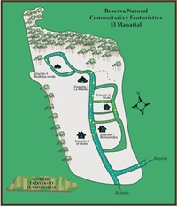
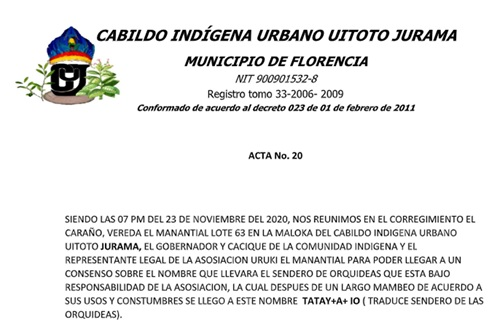

Orchid Conservation

Orquideas para la paz
(a) Scientific work (b)Community work (c)Resources.
Orquídeas para la Paz or Orchids for peace project, is a project that involve the research of orchids in regions of Colombia that have been affected by the conflict with the help of the community and their own sustainability.
This project is part of "Turismo Comunitario y Horticultura como una Estrategia para el Desarrollo Rural de Florencia, Caquetá Durante el Posconflicto" funded by MinCiencias, Colombia, and it was done mainly in Reserva Natural Comunitaria y Ecoturística el Manantial.
The main objective of the project is the elaboration of a management plan, which allows the reserve to have a sustainable future and, in addition, dictates clear regulations that avoid later administration problems, allowing the other aspects considered to work properly. This management plan must seek the well-being and good relationship of the different inhabitants and communities involved and the conservation of fauna and flora that inhabits there. At present, the priority that a tropical country like Colombia, which has one of the greatest biodiversity in the world, must face is to seek its protection and the Natural Reserves of Civil Society contribute to this protection efficiently. El Manantial Community Nature and Ecotourism Reserve still has wooded masses so close to the urban area of Florencia and with proper management its natural resources can be not only conserved, but also increased.
Orchid sampling and processing

Selection of areas to visit in the department of Caquetá
Expedition 01: El Manantial Community and Ecotourism Natural Reserve
Date: November 20, 2020
Coordinates: 1°38'22.82"N - 75°34'56.91"W
Altitude: 580 meters above sea level
Description: secondary forest, intervened, in the process of regeneration, with conserved areas, few large trees, terrain with high slopes, abundant vegetation cover, mainly saplings and latizals.
Expedition 02: Via Antigua to –Cabinet – La Ruidosa
Date: December 15 and 16, 2020
Coordinates: 1°52'30.81"N - 75°40'42.60"W
Height: 2079 – 2242 meters above sea level
Description: very humid cloud forest with temperatures between 8° and 16°C, characterized by little intervention, with the presence of large trees and abundant epiphytic plants; The terrain has very high slopes and is difficult to access.
Conservation concept in all fields
The concept of conservation in light of the different theories that are argued for protection, presents different and varied appreciations. Conservation is the set of effective actions that lead to the protection of the ecosystems that make up the area in question and the care of the animal and plant species and the mineral manifestations that make up the protected area. The care of biodiversity is not only framed in the criterion of quantity and diversity of species, but also in educating and protecting the communities that live in these protected areas, giving them elements for better conservation, their own subsistence and a training, so that they can sustainably obtain profits from their wealth in biodiversity, assuming what we now know as Nature-Based Solutions.ScopesEl Manantial, Community and Ecotourism Natural Reserve, has 31 hectares, where around 240 people live, 35 springs and areas of rock caves, trails through the forests and a very diverse flora and fauna. The community is made up of three culturally differentiated origins, which coexist within the Reserve, with a community of natives of the Uitoto and Muinane ethnic group and a population of non-native people. The scope of this management plan seeks not only to cover the protection of fauna and flora, but especially to seek mechanisms that make coexistence a peaceful socialization. |
AdministrationThere is an assembly that, legally assembled, appoints a Board of Directors. Which is already a starting point that facilitates the leader organization. Given that the El Manantial Community and Ecotourism Natural Reserve has among its members people from different cultural traditions and to facilitate the resolution of differences, it is proposed that a consultation committee be created whose purpose is to collaborate in the resolution of differences. Said committee must be made up of people from different ethnicities and have an odd number. |
ForestsThe forests in the area of the El Manantial, Community and Ecotourism Natural Reserve are heavily intervened, the best of their timber trees have been extracted, orchids and plants with commercial value have been heavily looted and there are no complete inventories of which there is there. Above all, it is necessary to take care of the state of the forests to prevent further deterioration. A list must be made of the trees that were originally from these forests, which can be done by consulting the native communities and the elderly who still remember their flora and fauna and based on these lists, begin to obtain seeds that allow enrichment plans to be made. of forested areas, as well as fruit and seed producers who help encourage the return of animals, both birds and rodents. The enrichment of the forest, planting those species that are now scarce, is vital to have a healthy forest and a better living environment, increasing tourism interest in visiting the area in the future. |
WaterThirty-five streams that originate in the El Manantial Community and Ecotourism Natural Reserve, is a very important number and demonstrates the importance of caring for water, a vital element for current protection campaigns. The first thing is that all the springs that originate or pass through there must be named and their names placed on a dissemination map. Taking care of these forests and especially their waters will serve as a mechanism to request the government and the Corporation that covers this area - Corpomazonía - to pay them annually for “Ecosystem Services”, which can help economically to sustain and maintain the forest. Booking. It is very important that the administration of the El Manantial Community and Ecotourism Natural Reserve maintain vigilance over possible water contamination and especially the proper disposal of sewage from the rooms to the sewers and, where there is none, to adequate septic tanks. . Water quality is the future of the El Manantial Community and Ecotourism Natural Reserve. |
Orchid TrailThe TATAY A IO trail is designed to create conservation awareness among the inhabitants of the El Manantia, Community and Ecotourism Natural Reserve and attract tourists interested in the flora. First of all, the emphasis of this trail will be orchids, but we must be very clear that they are plants that bloom during rainy or sunny seasons and therefore other attractive flowers such as Bromeliads and Heliconias and others that attract butterflies and flowers should be planted. birds and that they are all native to that region. Regarding this aspect, the script and design of the Path must be consulted. It is very important that the entire community acts as permanent guards, given that these plants are frequently stolen. |
Tourism receptionThe most difficult aspect to manage in a reserve is related to tourism. Many see this option as a winner, but if not handled properly, it can cause a lot of damage. To detect the range that can be admitted, it is necessary to make an analysis of which areas have the greatest potential and analyze how many people can resist without suffering damage, we call this “Carrying capacity”. Unfortunately, there is no reliable formula to do this analysis and in these cases, we must resort to the good sense of those who know the site and try to calculate while being conservative in their ability. In many cases it is thought that not receiving all the available public means losing money, but there is a greater loss when no one wants to visit it anymore due to the deterioration. Above all, tourists rarely visit a place to see it, their greatest satisfaction when leaving is to have an experience and that is what we must offer them. There are different audiences, which must be oriented according to their interests and abilities. Currently there are many possibilities that have not been properly analyzed and will have to be done in the near future. |
Tourism possibilities already set up in the El Manantial Community and Ecotourism Natural Reserve
• Awareness trail Trail aimed at the general public, which shows orchids and some other plants from the El Manantial Community and Ecotourism Natural Reserve. It is an easy tour, for all audiences.
• Monilia Amena ecological trail. This path must be operated by native communities that know a cosmogony. It is very important to have the possibility of evaluating the visitor, since it is not for all audiences.
• Visit to the Uitoto or Muinane malokas. This visit must have a prior procedure in the entry area, where instructions on behavior and respect for the cultural traditions of these communities are given. It is important to create a spirituality event, whether it is healing, balancing or meditation. It is important to create an event about orchids and native tradition and about plants and animals in the cosmogony of that community.
• Community nursery. The visit to this space must be very well coordinated and is the most important point to implement from now on.
Tourism possibilities to set up in the El Manantial Community and Ecotourism Natural Reserve
There are many possibilities for nature tourism and observation of fauna or flora. To do this, teams must be dedicated to explore and design these routes.
o Bird watching.
o Butterfly watching
o Nature observation tour
o Medicinal plants.
Sales
Sales to increase income should be aimed at offering souvenirs from visits to the site. A sale that is essential is the offer of guidance on the tours, because since these are public spaces the tourist could come alone to tour them. The way to get them to want to pay for the tour is to offer them an added value, of great weight, in the narration that the guides do during the guidance along the trails. The guide must become indispensable and be highly recommended for word-of-mouth activity. There are other sales that require analysis to see which ones are accepted:
• Souvenirs are usually bought for three reasons
-To pose for acquaintances of having been in that place.
-To bring a gift, that may remind the recipient that the person who gave it to him was there.
-As gifts to children.
• In general, souvenirs must, in addition to being aesthetically pleasing, take up little space, be light, and not be very fragile, so that tourists can handle them without problems in their travel suitcases.
• Sale of orchids
-This is a delicate point, since it must first of all comply with the legal requirements of the native flora and phytosanitary market.
-The nursery must be very clear that its first activities will be to maintain and grow the population of its native plants.
-Under no circumstances should a plant be sold that is not already supported by others and in sufficient quantities to have an inventory of them.
-The sale of orchids as a sustainable and profitable business should be thought about in about 3 years.
All sales must have a market study, which lets you know how much profit you leave. The amount of the profit must be divided into two parts, one for those who maintain the system and must purchase inputs and another part as profit for the Reserve.
Plant nursery management
It is necessary that there be a person in charge of the nursery, responsible for it and who has one more backup in case of absence and another who is in charge of fertilization and seed collection. The nursery is vital in this project. The first step is to organize it, get it working correctly, and learn a little about its behavior. The implementation of seed reproduction will be vital to have material available for sale and this requires time and patience, since there is no way to accelerate the birth and growth of seedlings. It is important that the seed and reproduction functions are divided, with the care and management of inventory.
Construction and/or expansion of the community greenhouse
The construction of the community greenhouse was carried out with community participation.
Reintrodution de orquídeas
Reintroduction is the voluntary propagation of organisms, within a native or natural distribution range of a species, when it has disappeared or its populations are threatened due to anthropogenic effects or natural disasters (SER, 2004).
Construction of the interpretive trail

Community training workshops
Construction and/or adaptation of a Community Greenhouse
The community actively participated in the construction of the community greenhouse.
Prepare the souvenir dossier so that the community determines which ones will be made
The community actively participates in the selection of models, images and designs for the souvenirs.
Development of an interpretive trail with orchids in the El Manantial Community and Ecotourism Natural Reserve
The name of the trail will be Tatay+A+IO which in the Uitoto language means Path of the Orchids. Given that very few families from El Manantial are collaborating effectively, only three families in addition to the native communities Coreguajes and Uitotos and taking into account that if there are not enough people monitoring the seasons and the ease for the orchids to be looted from their site exhibition, the decision was made to make the trail in five stations. In each station, the added content, or added value of the stations, must be specialized so as not to repeat the same thing in each station and give additional attractiveness to the route. The additional content must be two levels.
• The basics of orchids.
• The main added value will be the information on plants, animals and the Forest.
• The complement of the second level script will be the information about the communities, where they came from, who they are.
The script that will be applied to each of the stations will be a definitive aspect so that the tourist who is informed by word of mouth or by the Reserve's advertising, prefers to pay for the tour with a guide, rather than doing it only for the information they will receive from the person taking them. It is very important to make it clear that this trail, like the entire project that includes in vitro germination, is designed around the nursery and that is why it will be the last station, where you can give a complete image of its activities, see orchids, but, above all, being able to use the plants that allow them to be in the seasons, as a replacement to try to have the greatest number of them flowering.
Station Number 1
- Welcome, The content of this station should start with the project information “COMMUNITY TOURISM AND HORTICULTURE AS A STRATEGY FOR THE RURAL DEVELOPMENT OF FLORENCIA, CAQUETÁ DURING THE POST-CONFLICT” telling how it has given impetus to the community and the value of protecting biodiversity, with emphasis on orchids.
- Orchid exhibition
- Sale of souvenirs.
Station Number 2
Uruki. The journey from the first station is towards the unpaved road behind Don Ismael's house. This second station will be located on Mrs. Stella's plot. Here it will be explained what the Uruki group is, how it was formed and what its role is in this community. There will be a presentation of the orchids that are exhibited there and tell a little about the history of orchids in this region. Likewise, it will be told what role the plants that attract butterflies play, how they serve as hosts for the larvae in their first process to become chrysalises and what butterflies are like in the natural environment.
Station Number 3
Maloka. At this station, the content is already designed and depends directly on the head of the Uitoto Mayor Emilio community supported by the “special status for indigenous communities” that does not cover the other members of the El Manantial community. At Maloka Station there are already orchid crops, in accordance with the cultivation practices of this ethnic group. This crop should be fed with some plants from the project, the site signage provided, but let them distribute them as their tradition dictates. The fauna that lives there will also be an attraction, but we must insist that those nocturnal animals, such as the Potos flavus that lives there and is nocturnal, should not be bothering themselves to please tourists.
Station Number 4
Green medicine. Located on Don Raúl's plot, which is expected to soon be able to finish the Maloka that builds has a different appeal. In this season there should be orchids from the project as in all the previous ones, but with a little more emphasis on medicinal use and daily use than in the Uitoto or Muinane tradition, his wife is Muinane, and instead of plants that attract birds or butterflies, complement with plants from the region, the good medicinal garden it has. Don Raúl's speech should be heard in a support session, to see how he can complement or polish it and also if help can be provided for his performance. It is important that his wife learns to receive visitors and have the speech, so that, in case of her absence, she can replace him. From this station you return to Doña Mary's plot, station 5 Vivero. The route is long, downhill, which should be done calmly and with lots of conversation, but allowing visitors to exchange ideas about what they have experienced.
br>
Station Number 5
The nursery. Station number five, which is the last one where activity will take place, is located on Doña Mary Polanía's plot and due to her knowledge, having another personal orchid nursery and being in front of Don Ismael Rayo's house, which is where visitors may have left belongings stored that they did not need to take, they will go there later to collect their things and look at the souvenirs. Selection of the name for the trail by the indigenous communities that live in the El Manantial Ecotourism and Community Reserve. The Indigenous community present in the El Manantial Natural, Ecotourism and Community Reserve met in the sacred space of the Mambeadreo in the Maloca of the Uitoto Jurama Urban Indigenous Council to determine the name that the trail should bear. 